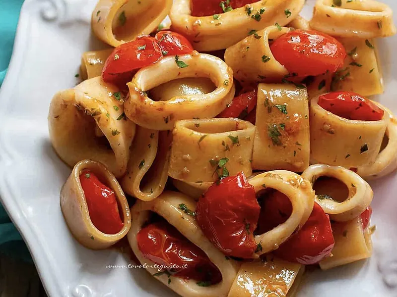
Calamarata al pistacchio
Pasta corta, calamari, pomodorini, granella di pistacchio e stracciatella pugliese. La firma della casa.
“Top la calamarata!!” — Marco B., Google
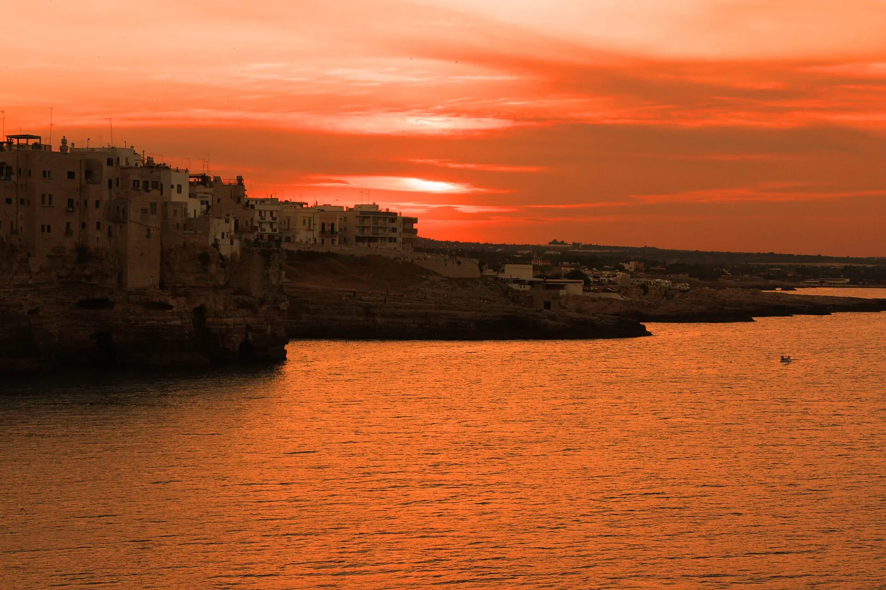
Trattoria di mare · Polignano a Mare
Pesce fresco del giorno, ricette di casa e un tramonto che vi porterete dietro. Affacciati sul mare di Largo Ardito, a pochi passi dal centro storico.
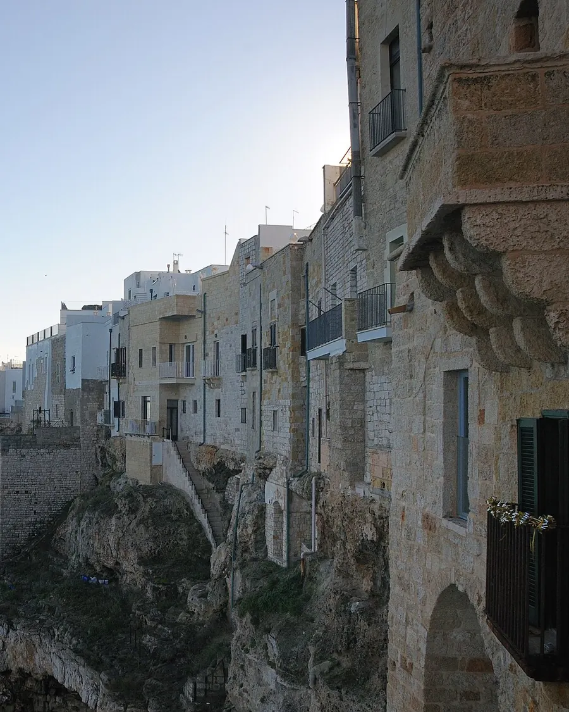
La nostra osteria
Pochi tavoli, il rumore del mare e una cucina che segue il pescato del giorno. Da Zanzi si mangia come a casa — se casa vostra fosse sulla scogliera di Polignano.
Siamo nati come pizzeria e, stagione dopo stagione, siamo diventati quello che amiamo di più: una trattoria di mare. Le ricette sono quelle della tradizione barese — riso, patate e cozze, orecchiette, frittura — con qualche tocco nostro, come il pistacchio che i nostri ospiti riconoscono al primo assaggio.
Fuori, i tavoli fronte mare per il pranzo al sole e la cena al tramonto. Dentro, una sala raccolta e fresca, con l'aria condizionata nelle sere d'estate. E sempre l'oste a darvi il benvenuto e a raccontarvi i piatti fuori menù.
Vi aspettiamo a tavola.
I piatti del cuore
Li citano nelle recensioni, li fotografano, tornano per riassaggiarli. Ecco da dove cominciare.

Pasta corta, calamari, pomodorini, granella di pistacchio e stracciatella pugliese. La firma della casa.
“Top la calamarata!!” — Marco B., Google
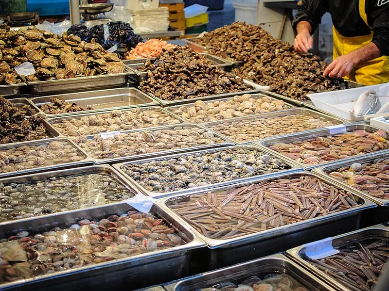
Gamberi, scampi e il meglio del pescato del giorno, serviti al naturale come vuole la tradizione pugliese.
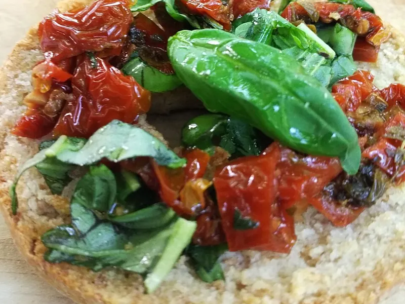
Pane casereccio abbrustolito con gamberi, alici, stracciatella e pomodorini, servito sul tagliere.
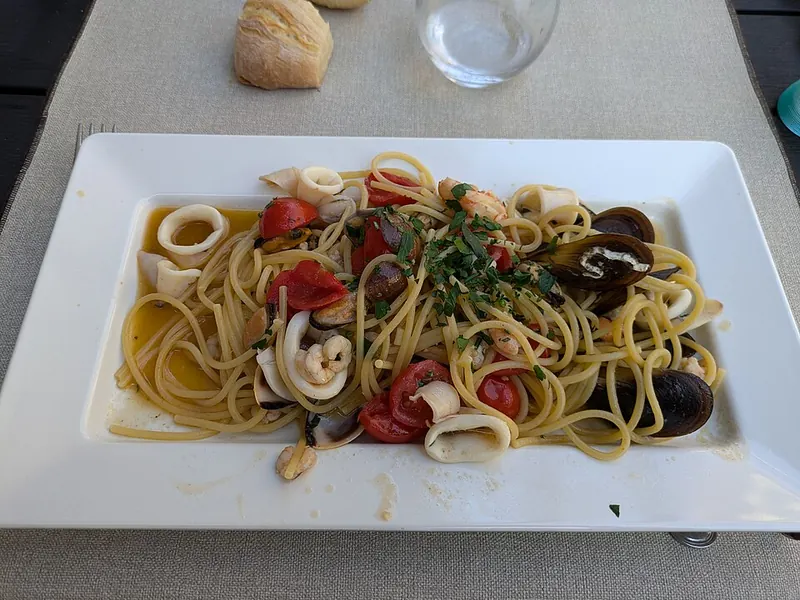
Cozze, vongole, gamberi e calamari saltati al pomodorino. Semplici, generosi, profumati di mare.
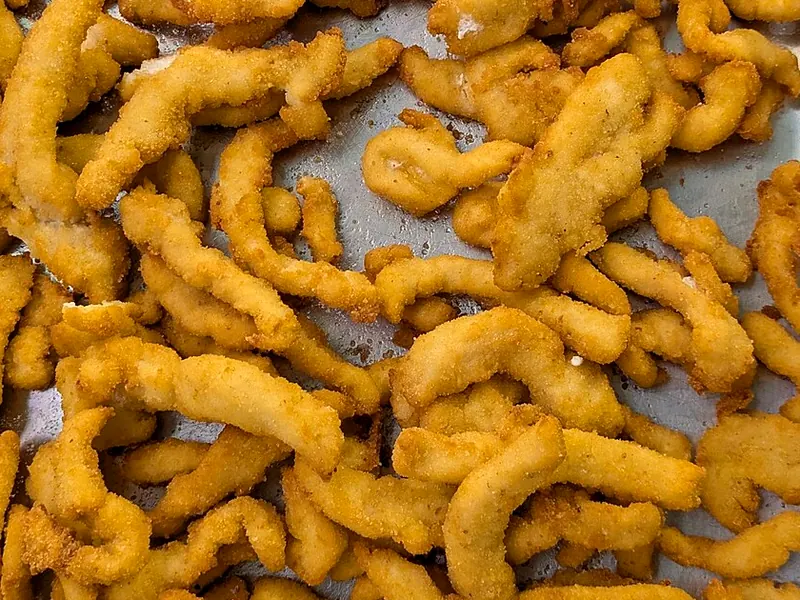
Calamari, gamberi e pesce del giorno in una frittura leggera e dorata, con limone e pane fatto in casa.
L'esperienza
Dai tavoli fronte mare il sole scende sulla costa e il cielo si accende d'arancio. Un calice di rosato, una frittura appena fatta e il rumore delle onde sotto la scogliera: chiedete un tavolo all'aperto per l'ora del tramonto.
Dicono di noi
«Solo la posizione della location merita 5 stelle, per non parlare dell'accoglienza, della cucina, della particolarità dei piatti e della qualità delle materie prime. Semplicità e gusto si sposano perfettamente con un'eleganza raffinata nella presentazione. […] Un posto semplice, ma davvero speciale.»
«Posizione molto bella per godersi il tramonto. […] Top la calamarata!! Il tutto accompagnato da un Mare Mosso rosé spumantizzato. Gagliardo il limoncello!!»
«Piccolo ma accogliente con posti sia fuori fronte mare che dentro con aria condizionata. Accoglienza e disponibilità top, qualità del cibo alta, cortesia tantissima. […] Rapporto qualità prezzo buona. Consigliato.»
«Siamo capitati per caso in questa splendida cornice… L'oste molto simpatico e disponibile. Cibo fresco. Porzioni giuste. […] Consiglio assolutamente.»
Galleria
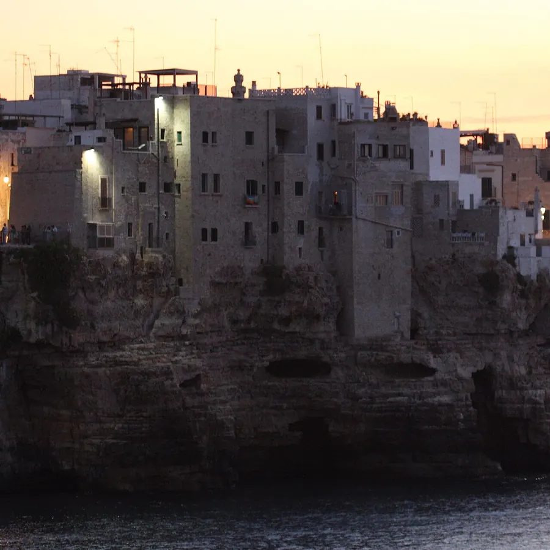
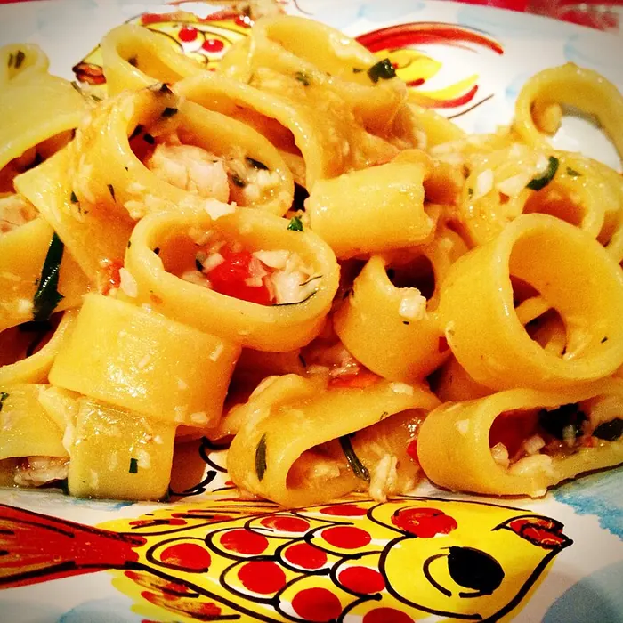
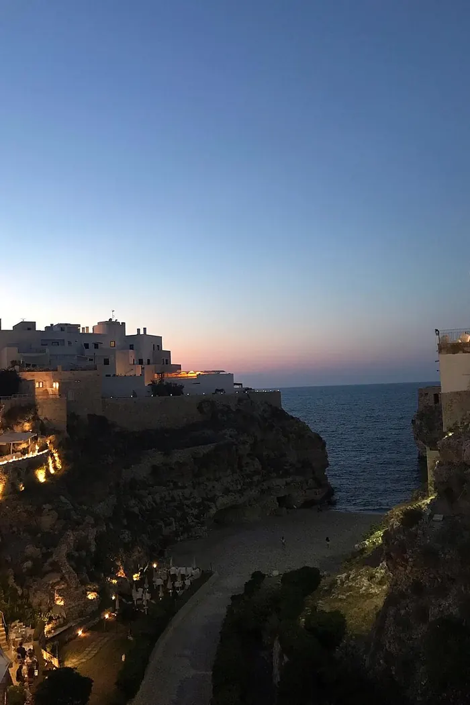
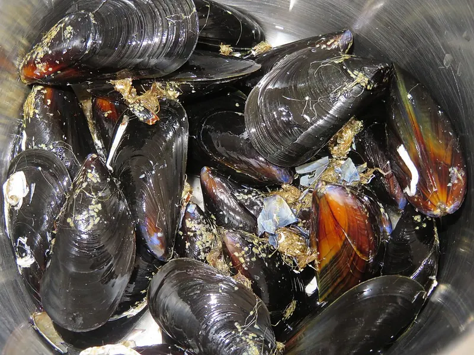
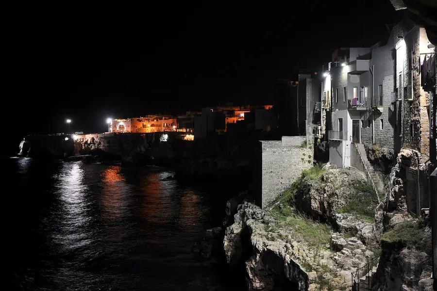
Prenota
Compilate il modulo: si aprirà WhatsApp con il messaggio già pronto da inviarci. Vi confermeremo la disponibilità il prima possibile.
Nei weekend e d'estate i tavoli fronte mare finiscono in fretta: vi consigliamo di prenotare con qualche giorno di anticipo.
Dove siamo
Appena fuori dal centro storico, lontano dalla folla e vicinissimi al mare. Pochi minuti a piedi dal borgo antico.
| Tutti i giorni | 7 su 7 |
|---|---|
| Pranzo | 12:00 – 15:00 |
| Cena | 19:00 – 24:00 |
Gli orari possono variare in bassa stagione: nel dubbio, chiamateci.
Per mostrare la mappa carichiamo Google Maps, che può impostare cookie di terze parti.